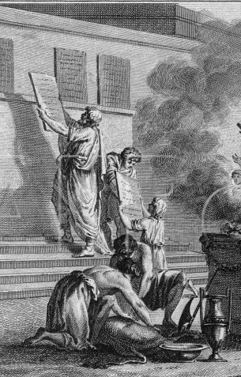
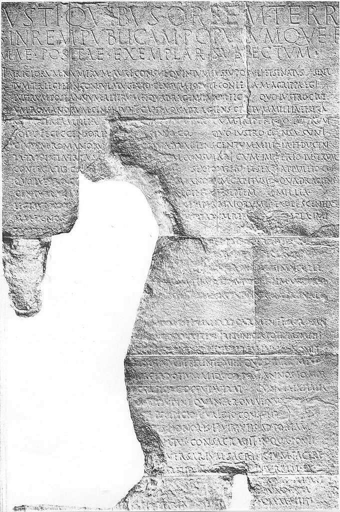
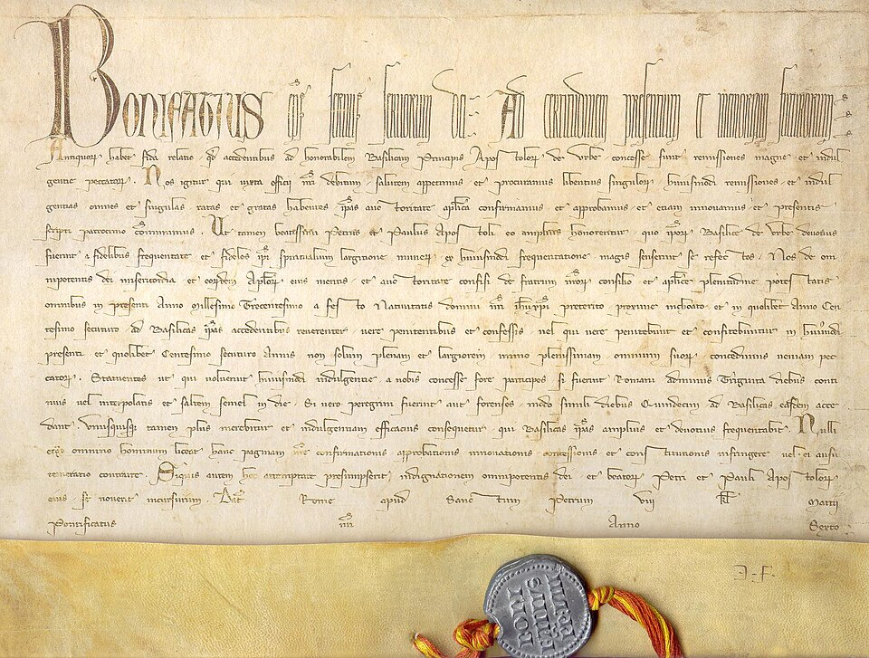
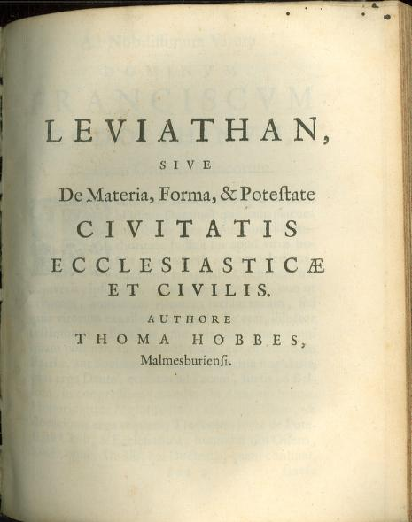

Fonti in rilevanza

Immagine: Dettaglio dell'incisione Loix des Douze Tables (1799), disegno di Silvestre David Mirys e incisione di Claude-Nicolas Malapeau
Leggi delle XII Tavole VI,4
| Autore | Decemviri legibus scribundis |
|---|---|
| Datazione | 450-449 a.C. |
| Tipologia | Epigrafe |
| Lingua originale | Latino |

Immagine: Frammento del Monumentum Ancyranum (Ankara)
Res Gestae Divi Augusti XXXIV,3
| Autore | Caio Giulio Cesare Ottaviano Augusto |
|---|---|
| Datazione | 14 d.C. |
| Tipologia | Epigrafe |
| Lingua originale | Latino, greco antico |

Immagine: Esempio di una bolla di Bonifacio VIII (Antiquorum habet, 1300 d.C.)
Unam Sanctam Ecclesiam
| Autore | Bonifacio VIII |
|---|---|
| Datazione | 18 novembre 1302 d.C. |
| Tipologia | Bolla pontificia |
| Lingua originale | Latino |

Immagine: Frontespizio dell'opera
Leviathan, sive, De materia, forma, & potestate civitatis ecclesiasticae et civilis XXVI
| Autore | Thomas Hobbes |
|---|---|
| Datazione | 1668 d.C. |
| Tipologia | Trattato |
| Lingua originale | Latino |